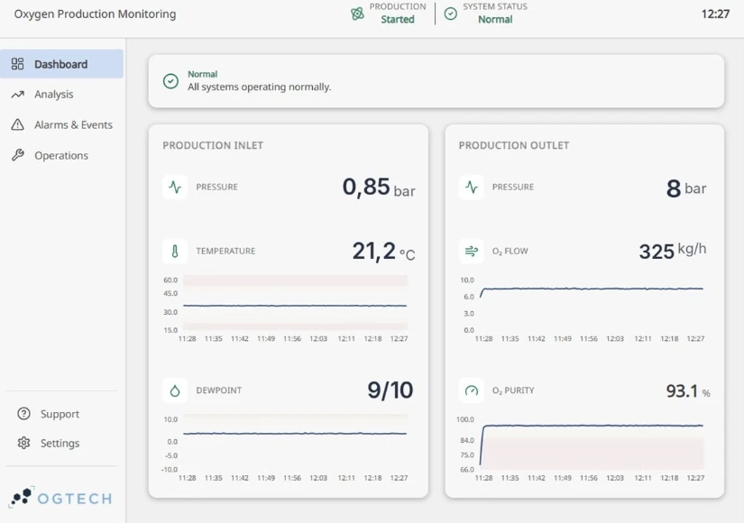
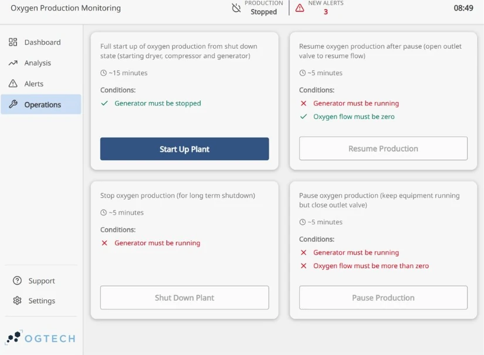

Oxygen plants for aquaculture
On-site oxygen.
Automatic backup.
Monitored remotely.
We size and integrate oxygen plants for aquaculture. If production stops, backup takes over automatically – and with OgTech Core we follow the plant from wherever we are.
Control and monitoring
OgTech Core
Four core functions in one solution.
- Automatic backupOn shutdown or low purity
- Remote monitoringPressure, purity and flow
- AlertsBefore deviations become critical
- Energy reportkWh per Nm³ O₂
Delivered toErkoFosnasund
See references →10–20,000 kg
oxygen per day
24/7
monitoring with alerts to your phone
Up to 1,000 kVA
backup power during outages
Uptime
Secure oxygen supply.
The plant is built for continuous operation, with backup, monitoring and remote access.
Backup that takes over
If production stops or oxygen purity drops, supply switches automatically to backup – liquid oxygen (LOX) or gas cylinders.
Deviations caught early
Pressure, purity and flow are monitored 24/7, with alerts to your phone on deviations.
Backup power
During a power outage, the plant is kept running on backup power – battery, hybrid or diesel, from small units up to 1,000 kVA.
Support without a site visit
With remote access we see the plant from wherever we are, and can troubleshoot and guide the operator straight away.
What we do
From requirement to a plant in operation.
We take responsibility for the whole process – from calculating the oxygen demand to following up the plant in operation.
- 01
Sizing
We calculate oxygen demand, purity, pressure and operating profile, and choose PSA, VSA or VPSA based on what gives the lowest energy use for the application.
- 02
Integration
Generator, storage, backup and control are built into one plant – in a container, on a barge, in an engine room or on deck.
- 03
OgTech Core
Control, automatic backup, monitoring and energy reporting in one solution.
- 04
Follow-up
We monitor the plant remotely after delivery and support the operator whenever needed.
OgTech Core
What OgTech Core does.
Core brings control, monitoring and operating data for the entire oxygen system together.
Automatic backup
If production stops or purity drops, Core brings in the backup supply automatically.
Remote monitoring
Pressure, purity, flow and operating status in real time – for the operator on site and for us.
Alerts
Alerts to the responsible person’s phone on deviations in pressure, purity or flow.
Energy report
Energy use per Nm³ of oxygen produced, as a basis for tracking cost and optimising operation.


OgTech Core is under development and is being extended alongside the plants we deliver.
Compact. Built for your site.
A complete plant in a compact format, with equipment layout and access for operation and maintenance planned from the start.
Contact
Contact us
Get in touch for an assessment of oxygen demand, location and current setup.
OgTech AS
Address
Kystveien 2, 4th floor